Contents
- Controller synthesis using SReachPoint for a Dubin's vehicle
- Problem formulation: Stochastic reachability of a target tube
- Dubin's vehicle dynamics
- Target tube definition
- Specifying initial states and which options to run
- Quantities needed to compute the optimal mean trajectory
- SReachPoint: chance-open
- SReachPoint: genzps-open
- SReachPoint: particle-open
- SReachPoint: voronoi-open
- SReachPoint: chance-affine
- Plot of the optimal mean trajectories
Controller synthesis using SReachPoint for a Dubin's vehicle
This example will demonstrate the use of SReachTools for controller synthesis in a stochastic continuous-state discrete-time linear time-varying (LTV) systems. This example script is part of the SReachTools toolbox, which is licensed under GPL v3 or (at your option) any later version. A copy of this license is given in https://github.com/unm-hscl/SReachTools/blob/master/LICENSE.
In this example script, we discuss how to use SReachPoint to synthesize open-loop controllers and affine-disturbance feedback controllers for the problem of stochastic reachability of a target tube. We demonstrate the following solution techniques:
- chance-open: Chance-constrained approach that uses risk allocation and piecewise-affine approximations to formulate a linear program to synthesize an open-loop controller (See Vinod and Oishi, Hybrid Systems: Computation and Control, 2019 (submitted), Lesser et. al., Conference on Decision and Control, 2013)
- genzps-open: Fourier transforms that uses Genz's algorithm to formulate a nonlinear log-concave optimization problem to be solved using MATLAB's patternsearch to synthesize an open-loop controller (See Vinod and Oishi, Control System Society- Letters, 2017)
- particle-open: Particle control filter approach that formulates a mixed-integer linear program to synthesize an open-loop controller (See Lesser et. al., Conference on Decision and Control, 2013)
- voronoi-open: Particle control filter approach that formulates a mixed-integer linear program to synthesize an open-loop controller. In contrast to particle-open, voronoi-open permits a user-specified upper bound on the overapproximation error in the maximal reach probability and has significant computational advantages due to its undersampling approach. (See Sartipizadeh et. al., American Control Conference, 2019 (submitted))
- chance-affine: Chance-constrained approach that uses risk allocation and piecewise-affine approximations to formulate a difference-of-convex program to synthesize a closed-loop (affine disturbance feedback) controller. The controller synthesis is done by solving a series of second-order cone programs. (See Vinod and Oishi, Hybrid Systems: Computation and Control, 2019 (submitted))
All computations were performed using MATLAB on an Intel Xeon CPU with 3.4GHz clock rate and 32 GB RAM. The simulation times for individual methods are reported in each section along with a Monte-Carlo simulation validation. The overall simulation time was 16 minutes. For sake of clarity, all commands were asked to be verbose (via SReachPointOptions). In practice, this can be turned off.
% Commands to ensure clean setup close all;clc;clearvars;
Problem formulation: Stochastic reachability of a target tube
Given an initial state 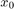, a time horizon 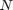, a linear system dynamics 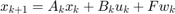 for 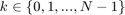, and a target tube 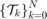, we wish to design an admissible controller that maximizes the probability of the state staying with the target tube. This maximal reach probability, denoted by 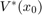, is obtained by solving the following optimization problem
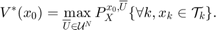
Here, 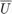 refers to the control policy which satisfies the control bounds specified by the input space 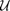 over the entire time horizon , 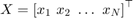 is the concatenated state vector, and the target tube is a sequence of sets . Here, 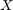 is a random vector with probability measure 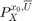 which is a parameterized by the initial state and policy .
In the general formulation requires is given by a sequence of (potentially time-varying and nonlinear) state-feedback controllers. To compute such a policy, we have to resort to dynamic programming which suffers from the curse of dimensionality. See these papers for details Abate et. al, Automatica, 2008, Summers and Lygeros, Automatica, 2010, and Vinod and Oishi, IEEE Trans. Automatic Control, 2018 (submitted).
SReachPoint provides multiple ways to compute an underapproximation of by restricting the search to the following controllers:
- open-loop controller: The controller provides a sequence of control actions 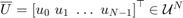 parameterized only by the initial state. This controller does not account for the actual state realization and therefore can be conservative. However, computing this control sequence is easy due to known convexity properties of the problem. See Vinod and Oishi, IEEE Trans. Automatic Control, 2018 (submitted) for more details. Apart from particle-open, all approaches provide guaranteed underapproximations or underapproximations to a user-specifed error.
- affine-disturbance feedback controller: The controller is a characterized by an affine transformation of the concatenated disturbance vector. The gain matrix is forced to be lower-triangular for the causality, resulting in the control action at 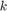 be dependent only the past disturbance values. Here, the control action at time 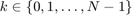 is given by 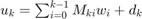. We optimize for 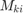 and 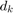 for every 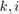, and the controller is given by 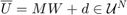, with 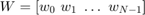 denoting the concatenated disturbance random vector. By construction, is now random, and it can not satisfy hard control bounds with non-zero and unbounded 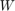. Therefore, we relax the control bound constraints 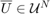 to a chance constraint, 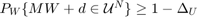 permitting the user to specify the probabilistic violation 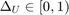 of the control bounds. We then construct a lower bound for the maximal reach probability when the affine disturbance feedback controller is used under saturation to meet the hard control bounds. In contrast to the open-loop controller synthesis, affine disturbance feedback controller synthesis is a non-convex problem, and we obtain a locally optimal solution using difference-of-convex programming. See Vinod and Oishi, Hybrid Systems: Computation and Control, 2019 (submitted) for more details.
All of our approaches are grid-free resulting in highly scalable solutions, especially for Gaussian-perturbed linear systems.
In this example, we perform controller synthesis that maximizes the probability of a Dubin's vehicle to stay within a time-varying collection of target sets. We model the Dubin's vehicle with known turning rate sequence as a linear time-varying system.
Dubin's vehicle dynamics
We consider a Dubin's vehicle with known turning rate sequence 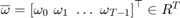, with additive Gaussian disturbance. The resulting dynamics are,
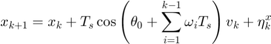
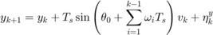
where 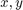 are the positions (state) of the Dubin's vehicle in  - and 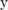- axes, 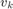 is the velocity of the vehicle (input), 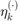 is the additive Gaussian disturbance affecting the dynamics, 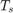 is the sampling time, and 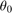 is the initial heading direction. We define the disturbance as 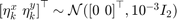.
- and 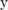- axes, 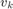 is the velocity of the vehicle (input), 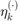 is the additive Gaussian disturbance affecting the dynamics, 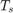 is the sampling time, and 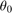 is the initial heading direction. We define the disturbance as 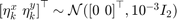.
n_mcarlo_sims = 1e5; % Monte-Carlo simulation particles sampling_time = 0.1; % Sampling time init_heading = pi/10; % Initial heading % Known turning rate sequence time_horizon = 50; omega = pi/time_horizon/sampling_time; turning_rate = omega*ones(time_horizon,1); % Input space definition umax = 6; input_space = Polyhedron('lb',0,'ub',umax); % Disturbance matrix and random vector definition dist_matrix = eye(2); eta_dist = RandomVector('Gaussian',zeros(2,1), 0.001 * eye(2)); [sys, heading_vec] = getDubinsCarLtv('add-dist', turning_rate, init_heading, ... sampling_time, input_space, dist_matrix, eta_dist);
Target tube definition
We define the target tube to be a collection of time-varying boxes 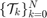 where is the time horizon.
In this problem, we define 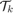 to be centered about the nominal trajectory with fixed velocity of 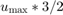 (faster than the maximum velocity allowed) and the heading angle sequence with 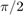 removed. The half-length of these boxes decay exponentially with a time constant which is 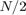.
v_nominal = umax * 3/2; % Nominal trajectory's heading velocity box_halflength_at_0 = 4; % Box half-length at t=0 time_const = 1/2*time_horizon; % Time constant characterize the % exponentially decaying box half-length angle_at_the_center=(heading_vec)-pi/2; % Box center angle wrt x-axis at origin % Target tube definition as well as plotting target_tube_cell = cell(time_horizon + 1,1); % Vector to store target sets figure(100);clf;hold on center_box = zeros(2, time_horizon + 1); % Vector to store box centers for itt = 0:time_horizon % Define the target set's center at time itt center_box(:, itt+1) = v_nominal *... [cos(angle_at_the_center(itt+1))-cos(angle_at_the_center(1)); sin(angle_at_the_center(itt+1))-sin(angle_at_the_center(1))]; % Define the target set at time itt target_tube_cell{itt+1} = Polyhedron(... 'lb',center_box(:, itt+1) -box_halflength_at_0*exp(- itt/time_const),... 'ub', center_box(:, itt+1) + box_halflength_at_0*exp(- itt/time_const)); plot(target_tube_cell{itt+1},'alpha',0.5,'color','y'); end xlabel('x'); ylabel('y'); axis equal axis([-8 10 -5 21]); box on; grid on; % Target tube definition target_tube = Tube(target_tube_cell{:});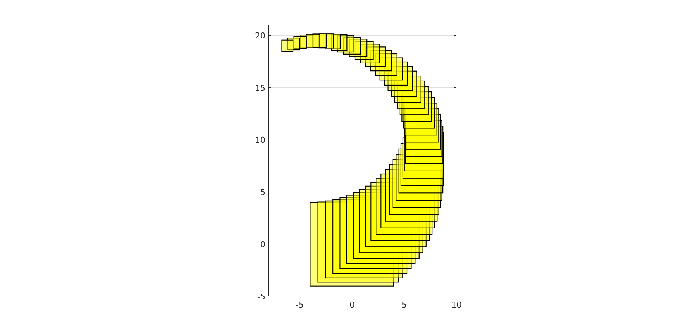
Specifying initial states and which options to run
chance_open_run = 1;
genzps_open_run = 1;
particle_open_run = 1;
voronoi_open_run = 1;
chance_affine_run = 1;
% Initial states for each of the method
init_state_chance_open = [2;2] + [-1;1];
init_state_genzps_open = [2;2] + [1;-1];
init_state_particle_open = [2;2] + [0;1];
init_state_voronoi_open = [2;2] + [1.5;1.5];
init_state_chance_affine = [2;2] + [2;1];
Quantities needed to compute the optimal mean trajectory
We first compute the dynamics of the concatenated state vector 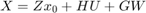, and compute the concatentated random vector and its mean.
[Z,H,G] = sys.getConcatMats(time_horizon);
% Compute the mean trajectory of the concatenated disturbance vector
muW = sys.dist.concat(time_horizon).parameters.mean;
SReachPoint: chance-open
This method is discussed in Vinod and Oishi, Hybrid Systems: Computation and Control, 2019 (submitted). It was introduced for stochastic reachability in Lesser et. al., Conference on Decision and Control, 2013.
This approach implements the chance-constrained approach to compute a globally optimal open-loop controller. It uses risk allocation and piecewise-affine overapproximation of the inverse normal cumulative density function to formulate a linear program for this purpose. Naturally, this is one of the fastest ways to compute an open-loop controller and an underapproximative probabilistic guarantee of safety. However, due to the use of Boole's inequality for risk allocation, it provides a conservative estimate of safety using the open-loop controller.
if chance_open_run fprintf('\n\nSReachPoint with chance-open\n'); % Set the maximum piecewise-affine overapproximation error to 1e-3 opts = SReachPointOptions('term', 'chance-open','pwa_accuracy',1e-3); tic; [prob_chance_open, opt_input_vec_chance_open] = SReachPoint('term', ... 'chance-open', sys, init_state_chance_open, target_tube, opts); elapsed_time_chance_open = toc; if prob_chance_open % Optimal mean trajectory construction % mean_X = Z * x_0 + H * U + G * \mu_W opt_mean_X_chance_open = Z * init_state_chance_open + ... H * opt_input_vec_chance_open + G * muW; opt_mean_traj_chance_open = reshape(opt_mean_X_chance_open, ... sys.state_dim,[]); % Check via Monte-Carlo simulation concat_state_realization = generateMonteCarloSims(n_mcarlo_sims, ... sys, init_state_chance_open, time_horizon,... opt_input_vec_chance_open); mcarlo_result = target_tube.contains(concat_state_realization); simulated_prob_chance_open = sum(mcarlo_result)/n_mcarlo_sims; else simulated_prob_chance_open = NaN; end fprintf('SReachPoint underapprox. prob: %1.2f | Simulated prob: %1.2f\n',... prob_chance_open, simulated_prob_chance_open); fprintf('Computation time: %1.3f\n', elapsed_time_chance_open); end
SReachPoint with chance-open SReachPoint underapprox. prob: 0.90 | Simulated prob: 0.97 Computation time: 1.729
SReachPoint: genzps-open
This method is discussed in Vinod and Oishi, Control System Society- Letters, 2017.
This approach implements the Fourier transform-based approach to compute a globally optimal open-loop controller. It uses Genz's algorithm to compute the probability of safety and optimizes the joint chance constraint involved in maximizing this probability. To handle the noisy behaviour of the Genz's algorithm, we rely on MATLAB's patternsearch for the nonlinear optimization. The global optimality of the open-loop controller is guaranteed by the log-concavity of the problem. Internally, we use the chance-open to initialize the nonlinear solver. Hence, this approach will return an open-loop controller with safety at least as good as chance-open.
if genzps_open_run fprintf('\n\nSReachPoint with genzps-open\n'); opts = SReachPointOptions('term', 'genzps-open', ... 'PSoptions',psoptimset('display','iter')); tic [prob_genzps_open, opt_input_vec_genzps_open] = SReachPoint('term', ... 'genzps-open', sys, init_state_genzps_open, target_tube, opts); elapsed_time_genzps = toc; if prob_genzps_open > 0 % Optimal mean trajectory construction % mean_X = Z * x_0 + H * U + G * \mu_W opt_mean_X_genzps_open = Z * init_state_genzps_open + ... H * opt_input_vec_genzps_open + G * muW; opt_mean_traj_genzps_open= reshape(opt_mean_X_genzps_open, ... sys.state_dim,[]); % Check via Monte-Carlo simulation concat_state_realization = generateMonteCarloSims(n_mcarlo_sims, ... sys, init_state_genzps_open, time_horizon,... opt_input_vec_genzps_open); mcarlo_result = target_tube.contains(concat_state_realization); simulated_prob_genzps_open = sum(mcarlo_result)/n_mcarlo_sims; else simulated_prob_genzps_open = NaN; end fprintf('SReachPoint underapprox. prob: %1.2f | Simulated prob: %1.2f\n',... prob_genzps_open, simulated_prob_genzps_open); fprintf('Computation time: %1.3f\n', elapsed_time_genzps); end
SReachPoint with genzps-open
Iter Func-count f(x) MeshSize Method
0 1 0.0325232 1
1 124 0.0325232 0.5 Refine Mesh
2 229 0.0314907 1 Successful Poll
3 350 0.0314907 0.5 Refine Mesh
4 474 0.0314907 0.25 Refine Mesh
5 609 0.0314907 0.125 Refine Mesh
6 744 0.0314907 0.0625 Refine Mesh
7 879 0.0314907 0.03125 Refine Mesh
8 1014 0.0314907 0.01563 Refine Mesh
9 1149 0.0314907 0.007813 Refine Mesh
10 1284 0.0314907 0.003906 Refine Mesh
11 1419 0.0314907 0.001953 Refine Mesh
12 1554 0.0314907 0.0009766 Refine Mesh
13 1724 0.0314907 0.0004883 Refine Mesh
14 1894 0.0314907 0.0002441 Refine Mesh
15 2064 0.0314907 0.0001221 Refine Mesh
16 2234 0.0314907 6.104e-05 Refine Mesh
17 2404 0.0314907 3.052e-05 Refine Mesh
18 2574 0.0314907 1.526e-05 Refine Mesh
19 2744 0.0314907 7.629e-06 Refine Mesh
20 2914 0.0314907 3.815e-06 Refine Mesh
21 3084 0.0314907 1.907e-06 Refine Mesh
22 3254 0.0314907 9.537e-07 Refine Mesh
Optimization terminated: mesh size less than options.MeshTolerance.
SReachPoint underapprox. prob: 0.97 | Simulated prob: 0.97
Computation time: 393.195
SReachPoint: particle-open
This method is discussed in Lesser et. al., Conference on Decision and Control, 2013.
This approach implements the particle control approach to compute an open-loop controller. It is a sampling-based technique and hence the resulting probability estimate is random with its variance going to zero as the number of samples considered goes to infinity. Note that since a mixed-integer linear program is solved underneath with the number of binary variables corresponding to the number of particles, using too many particles can cause an exponential increase in computational time.
if particle_open_run fprintf('\n\nSReachPoint with particle-open\n'); opts = SReachPointOptions('term','particle-open','verbose',1,... 'num_particles',50); tic [prob_particle_open, opt_input_vec_particle_open] = SReachPoint('term', ... 'particle-open', sys, init_state_particle_open, target_tube, opts); elapsed_time_particle = toc; if prob_particle_open > 0 % Optimal mean trajectory construction % mean_X = Z * x_0 + H * U + G * \mu_W opt_mean_X_particle_open = Z * init_state_particle_open + ... H * opt_input_vec_particle_open + G * muW; opt_mean_traj_particle_open =... reshape(opt_mean_X_particle_open, sys.state_dim,[]); % Check via Monte-Carlo simulation concat_state_realization = generateMonteCarloSims(n_mcarlo_sims, ... sys, init_state_particle_open,time_horizon,... opt_input_vec_particle_open); mcarlo_result = target_tube.contains(concat_state_realization); simulated_prob_particle_open = sum(mcarlo_result)/n_mcarlo_sims; else simulated_prob_particle_open = NaN; end fprintf('SReachPoint approx. prob: %1.2f | Simulated prob: %1.2f\n',... prob_particle_open, simulated_prob_particle_open); fprintf('Computation time: %1.3f\n', elapsed_time_particle); end
SReachPoint with particle-open Creating Gaussian random variable realizations....Done Setting up CVX problem....Done Parsing and solving the MILP....Done SReachPoint approx. prob: 0.98 | Simulated prob: 0.91 Computation time: 27.785
SReachPoint: voronoi-open
This method is discussed in Sartipizadeh et. al., American Control Conference, 2019 (submitted)
This approach implements the undersampled particle control approach to compute an open-loop controller. It computes, using k-means, a representative sample realization of the disturbance which is significantly smaller. This drastically improves the computational efficiency of the particle control approach. Further, because it uses Hoeffding's inequality, the user can specify an upper-bound on the overapproximation error. The undersampled probability estimate is used to create a lower bound of the solution corresponding to the original particle control problem with appropriate (typically large) number of particles. Thus, this has all the benefits of the particle-open option, with additional benefits of being able to specify a maximum overapproximation error as well being computationally tractable.
if voronoi_open_run fprintf('\n\nSReachPoint with voronoi-open\n'); opts = SReachPointOptions('term','voronoi-open','verbose',1,... 'max_overapprox_err', 1e-3, 'undersampling_fraction', 0.001); tic [prob_voronoi_open, opt_input_vec_voronoi_open] = SReachPoint('term', ... 'voronoi-open', sys, init_state_voronoi_open, target_tube, opts); elapsed_time_voronoi = toc; if prob_voronoi_open > 0 % Optimal mean trajectory construction % mean_X = Z * x_0 + H * U + G * \mu_W opt_mean_X_voronoi_open = Z * init_state_voronoi_open + ... H * opt_input_vec_voronoi_open + G * muW; opt_mean_traj_voronoi_open =... reshape(opt_mean_X_voronoi_open, sys.state_dim,[]); % Check via Monte-Carlo simulation concat_state_realization = generateMonteCarloSims(n_mcarlo_sims, ... sys, init_state_voronoi_open,time_horizon,... opt_input_vec_voronoi_open); mcarlo_result = target_tube.contains(concat_state_realization); simulated_prob_voronoi_open = sum(mcarlo_result)/n_mcarlo_sims; else simulated_prob_voronoi_open = NaN; end fprintf('SReachPoint approx. prob: %1.2f | Simulated prob: %1.2f\n',... prob_voronoi_open, simulated_prob_voronoi_open); fprintf('Computation time: %1.3f\n', elapsed_time_voronoi); end
SReachPoint with voronoi-open Required number of particles: 9.2110e+03 | Samples used: 30 Creating Gaussian random variable realizations....Done Using k-means for undersampling....Done Setting up CVX problem....Done Parsing and solving the MILP....Done Undersampled probability (with 30 particles): 0.659 Underapproximation to the original MILP (with 9211 particles): 0.948 SReachPoint approx. prob: 0.95 | Simulated prob: 0.95 Computation time: 8.076
SReachPoint: chance-affine
This method is discussed in Vinod and Oishi, Hybrid Systems: Computation and Control, 2019 (submitted).
This approach implements the chance-constrained approach to compute a locally optimal affine disturbance feedback controller. In contrast to chance-open, this approach optimizes for an affine feedback gain for the concatenated disturbance vector as well as a bias. The resulting optimization problem is non-convex, and SReachTools formulates a difference-of-convex program to solve this optimization problem to a local optimum. Since affine disturbance feedback controllers can not satisfy hard control bounds, we relax the control bounds to be probabilistically violated with at most a probability of 0.01. After obtaining the affine feedback controller, we compute a lower bound to the maximal reach probability in the event saturation is applied to satisfy the hard control bounds. Due to its incorporation of state-feedback, this approach typically permits the construction of the highest underapproximative probability guarantee.
if chance_affine_run fprintf('\n\nSReachPoint with chance-affine\n'); opts = SReachPointOptions('term', 'chance-affine',... 'max_input_viol_prob', 1e-2, 'verbose',2); tic [prob_chance_affine, opt_input_vec_chance_affine,... opt_input_gain_chance_affine] = SReachPoint('term', 'chance-affine',... sys, init_state_chance_affine, target_tube, opts); elapsed_time_chance_affine = toc; if prob_chance_affine > 0 % mean_X = Z * x_0 + H * (M \mu_W + d) + G * \mu_W opt_mean_X_chance_affine = Z * init_state_chance_affine +... H * opt_input_vec_chance_affine + ... (H * opt_input_gain_chance_affine + G) * muW; % Optimal mean trajectory construction opt_mean_traj_chance_affine = reshape(opt_mean_X_chance_affine, ... sys.state_dim,[]); % Check via Monte-Carlo simulation concat_state_realization = generateMonteCarloSims(n_mcarlo_sims, ... sys, init_state_chance_affine, time_horizon,... opt_input_vec_chance_affine, opt_input_gain_chance_affine); mcarlo_result = target_tube.contains(concat_state_realization); simulated_prob_chance_affine = sum(mcarlo_result)/n_mcarlo_sims; else simulated_prob_chance_affine = NaN; end fprintf('SReachPoint underapprox. prob: %1.2f | Simulated prob: %1.2f\n',... prob_chance_affine, simulated_prob_chance_affine); fprintf('Computation time: %1.3f\n', elapsed_time_chance_affine); end
SReachPoint with chance-affine Setting up the CVX problem 0. CVX status: Inaccurate/Solved | Max iterations : <200 Current probabilty: 0.010 | tau_iter: 1 DC slack-total sum --- state: 4.63e+03 | input: 3.02e+03 Setting up the CVX problem 1. CVX status: Solved | Max iterations : <200 Current probabilty: 0.967 | tau_iter: 2 DC slack-total sum --- state: 1.21e-12 | input: 6.05e-13 | Acceptable: <1.000e-08 DC convergence error: 7.65e+03 | Acceptable: <1.000e-04 Setting up the CVX problem 2. CVX status: Solved | Max iterations : <200 Current probabilty: 0.996 | tau_iter: 4 DC slack-total sum --- state: 3.47e-13 | input: 1.71e-13 | Acceptable: <1.000e-08 DC convergence error: 2.90e-02 | Acceptable: <1.000e-04 Setting up the CVX problem 3. CVX status: Solved | Max iterations : <200 Current probabilty: 0.999 | tau_iter: 8 DC slack-total sum --- state: 1.62e-11 | input: 8.33e-12 | Acceptable: <1.000e-08 DC convergence error: 2.33e-03 | Acceptable: <1.000e-04 Setting up the CVX problem 4. CVX status: Solved | Max iterations : <200 Current probabilty: 0.999 | tau_iter: 16 DC slack-total sum --- state: 1.82e-10 | input: 1.14e-10 | Acceptable: <1.000e-08 DC convergence error: 2.39e-04 | Acceptable: <1.000e-04 Setting up the CVX problem 5. CVX status: Solved | Max iterations : <200 Current probabilty: 0.999 | tau_iter: 32 DC slack-total sum --- state: 1.66e-14 | input: 8.31e-15 | Acceptable: <1.000e-08 DC convergence error: 1.50e-05 | Acceptable: <1.000e-04 SReachPoint underapprox. prob: 1.00 | Simulated prob: 1.00 Computation time: 378.753
Plot of the optimal mean trajectories
figure(101); clf; hold on; for itt = 0:time_horizon if itt==0 % Remember the first the tube h_target_tube = plot(target_tube_cell{1},'alpha',0.5,'color','y'); else plot(target_tube_cell{itt+1},'alpha',0.08,'LineStyle',':','color','y'); end end axis equal h_nominal_traj = scatter(center_box(1,:), center_box(2,:), 50,'ks','filled'); h_vec = [h_target_tube, h_nominal_traj]; legend_cell = {'Target tube', 'Nominal trajectory'}; % Plot the optimal mean trajectory from the vertex under study if chance_open_run h_opt_mean_ccc = scatter(... [init_state_chance_open(1), opt_mean_traj_chance_open(1,:)], ... [init_state_chance_open(2), opt_mean_traj_chance_open(2,:)], ... 30, 'bo', 'filled','DisplayName', 'Mean trajectory (chance-open)'); legend_cell{end+1} = 'Mean trajectory (chance-open)'; h_vec(end+1) = h_opt_mean_ccc; end if genzps_open_run h_opt_mean_genzps = scatter(... [init_state_genzps_open(1), opt_mean_traj_genzps_open(1,:)], ... [init_state_genzps_open(2), opt_mean_traj_genzps_open(2,:)], ... 30, 'kd','DisplayName', 'Mean trajectory (genzps-open)'); legend_cell{end+1} = 'Mean trajectory (genzps-open)'; h_vec(end+1) = h_opt_mean_genzps; end if particle_open_run h_opt_mean_particle = scatter(... [init_state_particle_open(1), opt_mean_traj_particle_open(1,:)], ... [init_state_particle_open(2), opt_mean_traj_particle_open(2,:)], ... 30, 'r^', 'filled','DisplayName', 'Mean trajectory (particle-open)'); legend_cell{end+1} = 'Mean trajectory (particle-open)'; h_vec(end+1) = h_opt_mean_particle; end if voronoi_open_run h_opt_mean_voronoi = scatter(... [init_state_voronoi_open(1), opt_mean_traj_voronoi_open(1,:)], ... [init_state_voronoi_open(2), opt_mean_traj_voronoi_open(2,:)], ... 30, 'cv', 'filled','DisplayName', 'Mean trajectory (voronoi-open)'); legend_cell{end+1} = 'Mean trajectory (voronoi-open)'; h_vec(end+1) = h_opt_mean_voronoi; end if chance_affine_run h_opt_mean_chance_affine = scatter(... [init_state_chance_affine(1), opt_mean_traj_chance_affine(1,:)], ... [init_state_chance_affine(2), opt_mean_traj_chance_affine(2,:)], ... 30, 'ms', 'filled','DisplayName', 'Mean trajectory (chance-affine)'); legend_cell{end+1} = 'Mean trajectory (chance-affine)'; h_vec(end+1) = h_opt_mean_chance_affine; end legend(h_vec, legend_cell, 'Location','EastOutside', 'interpreter','latex'); xlabel('x'); ylabel('y'); axis equal box on;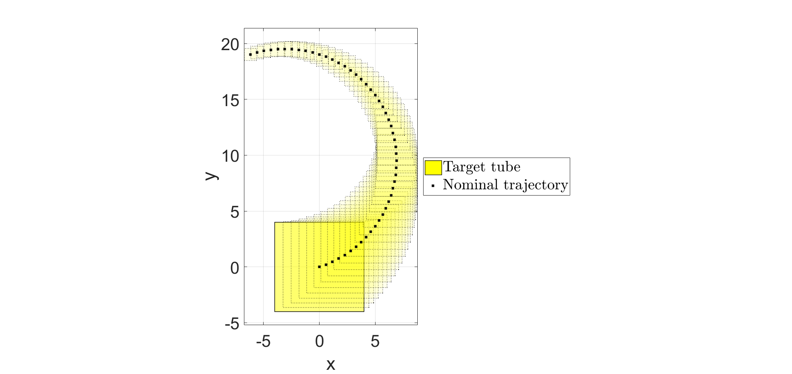